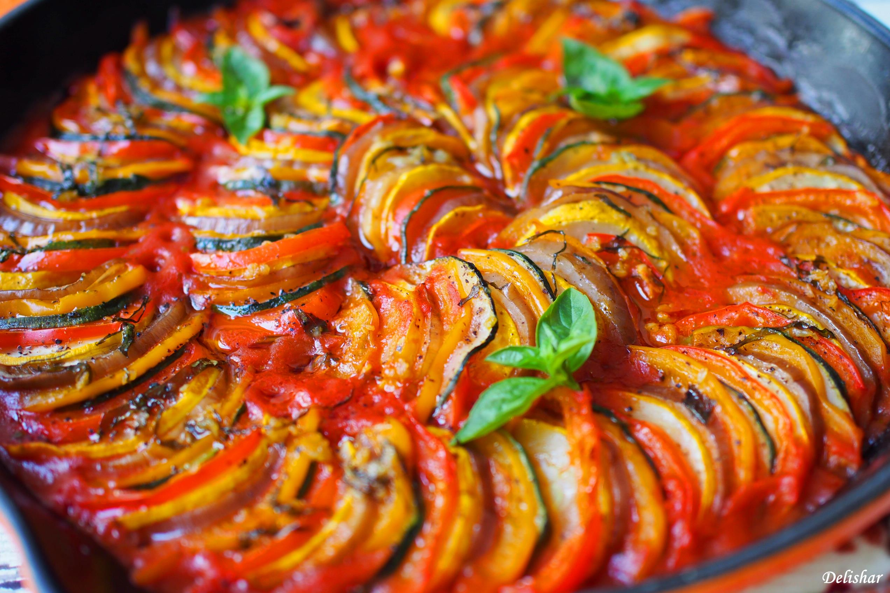

Confit Byaldi

Description
Confit Byaldi is a dish made of thinly sliced and stacked vegetables
Ingredients
- 6 large roma tomatoes, divided
- 2 red bell peppers, seeded and left whole
- 1/2 cup vegetable stock
- 1/2 cup water
- 2 sprigs rosemary, picked, divided
- 2 sprigs thyme, picked
- 1 clove garlic
- 1/2 small onion
- 3 tablespoons olive oil, divided
- 2 medium green squash
- 2 medium yellow squash
- 2 medium Japanese eggplants
- 1 teaspoons kosher salt
- 1 teaspoons freshly ground pepper
- 5 leaves fresh parsley, torn